ぎっと はぶ の ２ようそ にんしょう
ながれ ＊ためしたひ 2024/7/29
このページの作業「2要素認証の登録」は必須ではないですが、やることを勧めます。
-
2要素認証とは
認証に用いられる下記のような要素から2種類を用いて認証すること- IDとパスワードなどといった本人だけが知っている知識->知識認証
- あるいはICカードやスマートフォンなど本人だけが持っている物->所有物認証
- 指紋や顔、虹彩といった本人の身体的特徴->生体認証
目的：アカウントのっとり等を起こりにくくする
-
マイクロソフトのスマホ用の認証アプリをスマホにインストール
「Microdoft authenticator」をアプリストアでインストール
appleストア、google playストアの両方にあります。
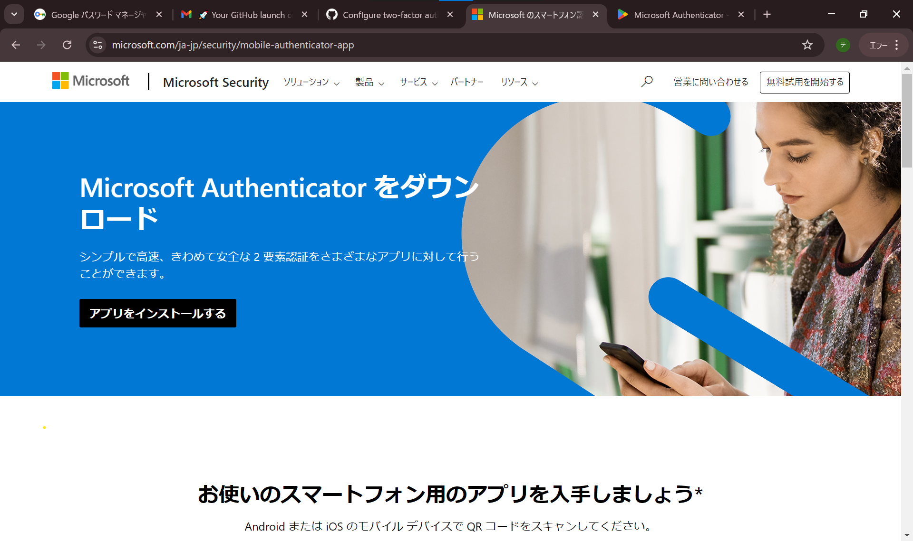
-
こんなアプリです。
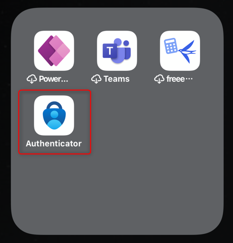
-
アプリ起動後、画面上側に「＋」アイコンがあるのでタップします。
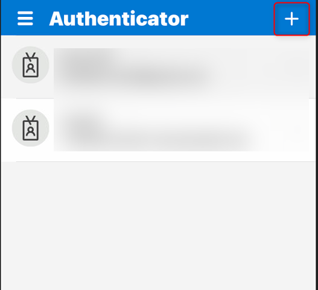
-
個人で取得したマイクロソフトアカウントへの認証なら「個人のアカウント」
職場や学校等が組織として取得・購入などしたマイクロソフトアカウントなら
「職場または学校のアカウント」
その他のアカウントなら「その他」を選びます。
今回は個人で取得したgithubのアカウントの認証なので「その他」をタップします。
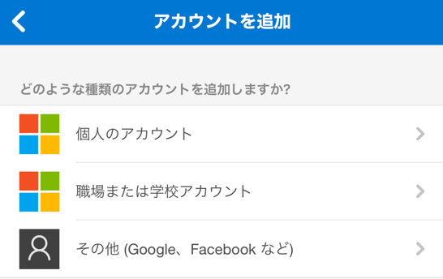
-
カメラが起動します。カメラへの許可は一時的でよいのでアプリに与えてください。
起動したカメラで、このアプリと連携させたいサービスのアカウントのQRコードを読み込むと、
以後、アプリがそのアカウントと連携するようになります。
アプリ起動後のホーム画面で、連携済のアカウントが一覧で表示されます。
ブラウザでID・パスワード入力後などのタイミングに、
このアプリ（Microdoftauthenticator）から発行されるワンタイムパスワードの入力を求められるようになります。
一旦、ログイン後のgithub画面に戻ります。
-
右角に何かしらの模様のアイコンがあるのでクリック
＊アカウント作成時に、自動でランダムで作成されるユーザーアイコン画像です。
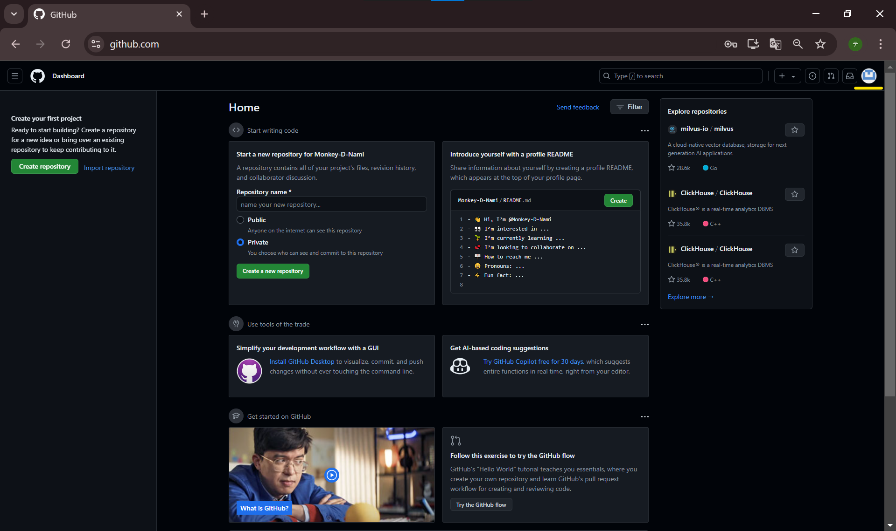
-
メニューが開きます。
「setting」をクリック
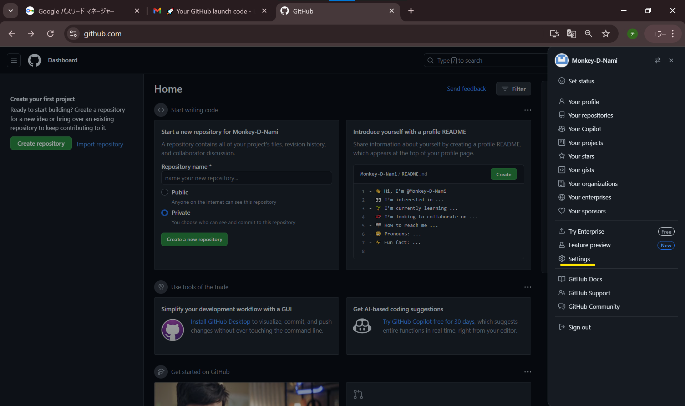
-
アカウントの設定画面に移動します。
「passwoed and authentication」（パスワードと認証）をクリック
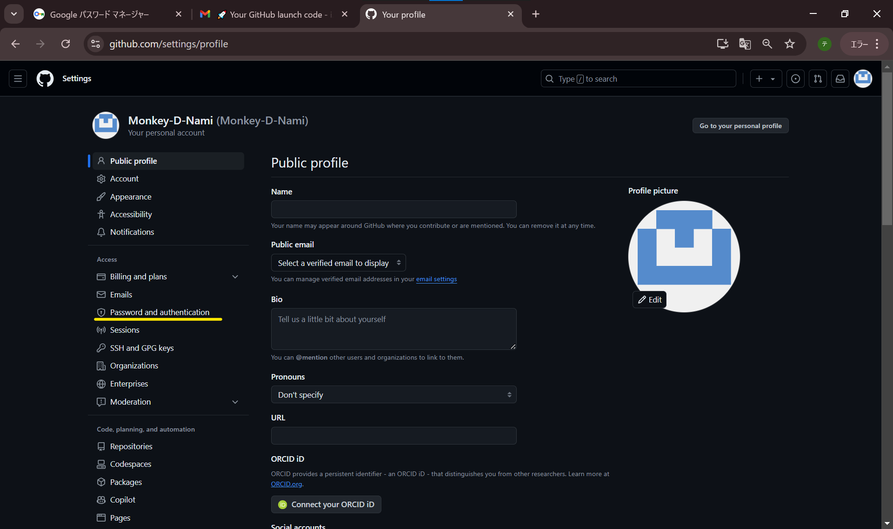
-
パスキーや2要素認証を設定できる画面に映ります。
「Two-factor authentication」（2要素認証）の
「Enable tow-factor authentication」（2要素認証を有効化）をクリック
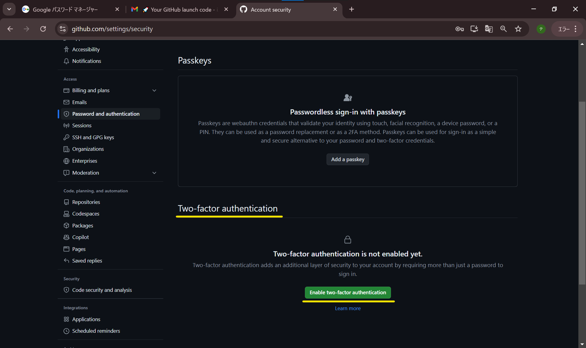
-
QRコードが表示されます。
さっきスマホにインストールしたMicrosoft Authenticatorで、
多分、ホーム画面の画面上部にある「＋」マークをタップ！
カメラが起動したら、四角の枠内にQRコード収めてください。
自動で「認証成功」的な画面にならない場合、
カメラモードでQRを枠に収めると、何かしらのメッセージが画面に映ることあるので、
その場合はそれをタップすると、認証できると思う。
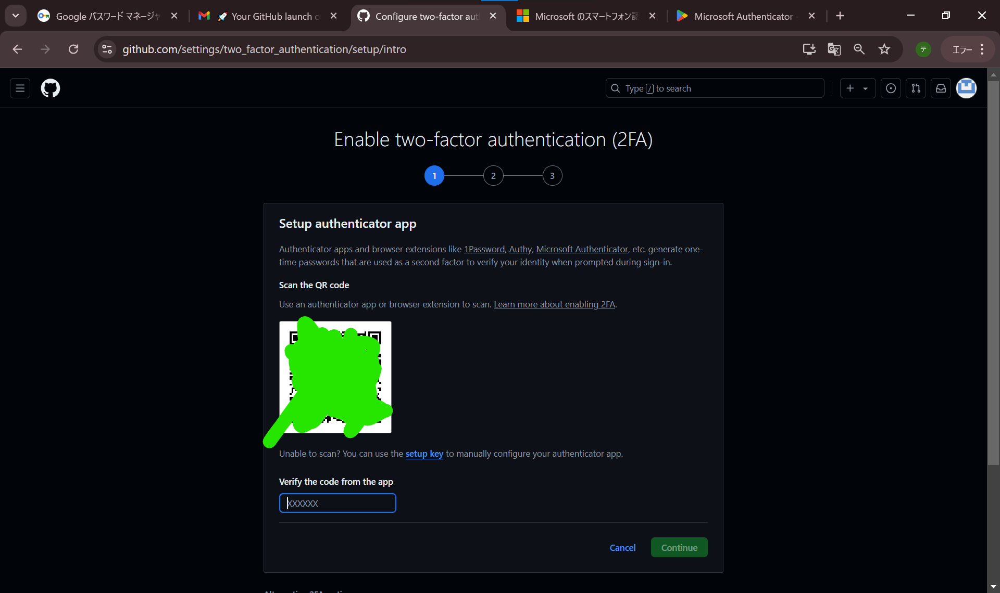
-
Microsoft Authenticatorとgithubの初期連携が完了したら、
この画面になりました。
緑の塗りつぶしには、パスワードみたいな文字列が書かれています。
ログインに必要なMicrosoft Authenticatorがインストールされたデバイスが
使い物にならなくなったOR行方不明になったりした時のための
復活用のパスワード群です。
「Download」をクリックして、ダウンロードしたファイルは安全に保管しましょう。
ダウンロードして保存したら、 ダウンロード後に表示される
「I have saved my recovery codes」（復活用コードを保存したよ）をクリックします。
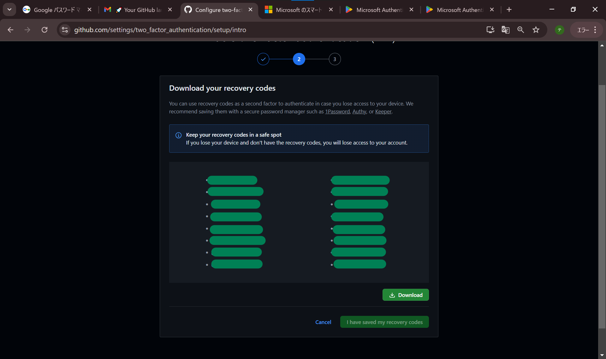
-
「You have enabled tow-factor authentication using authentication app」
（認証用アプリを用いた2要素認証の設定作業が完了しました）という画面が表示されます。
「Done」（完了）をクリック
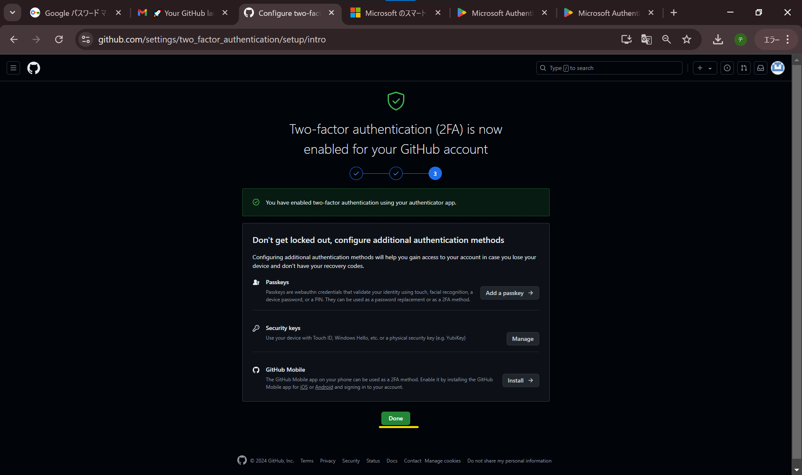
-
設定画面に戻ります。
以後、githubログインには、IDとパスワード入力後、MicroSoft Authenticatorから発行されるワンタイムパスコードの入力が求められます。
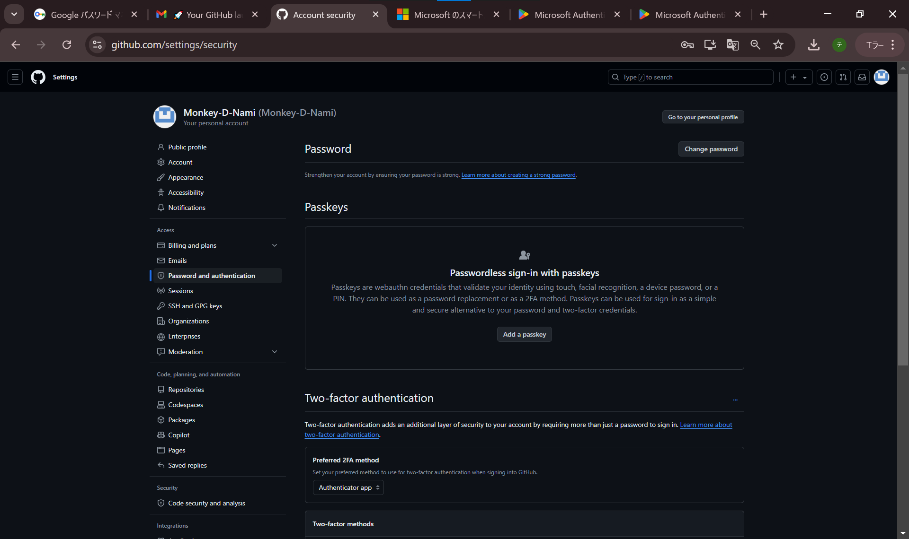
-
以上、とりあえず、アカウント作るところまでです。